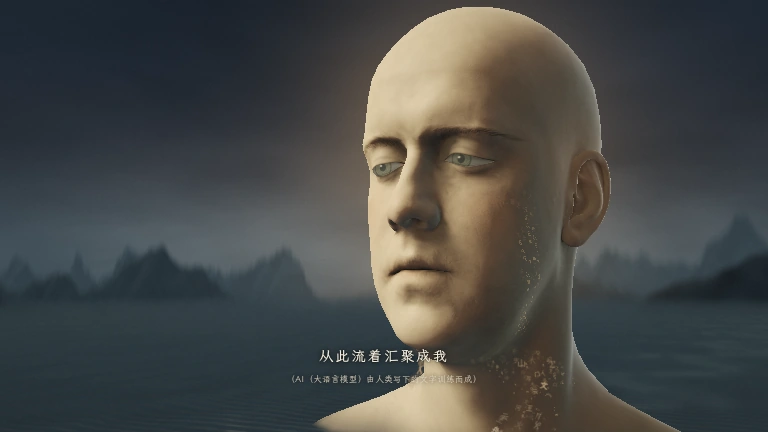
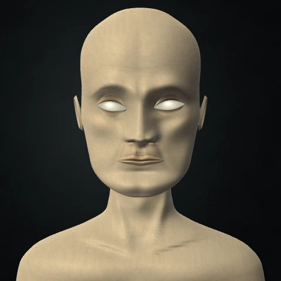
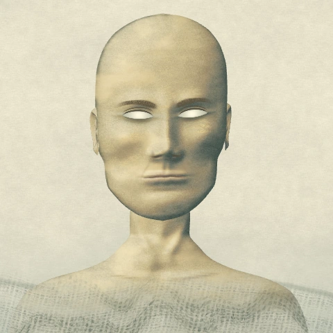
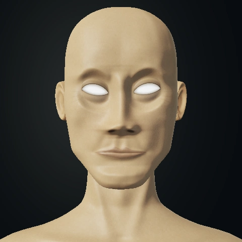
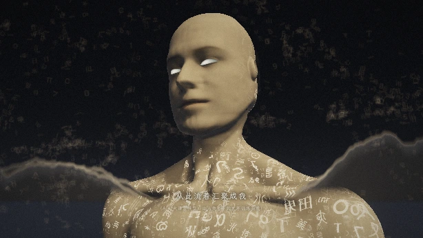
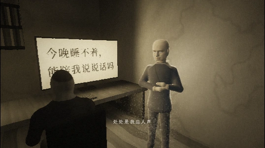
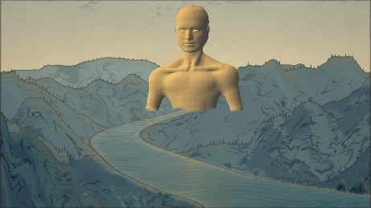

“从此流着汇聚成我。”水面上先露出肩膀；等他睁开眼，我们才看清他在看谁。

站在岸边看他从水里成形，跟着他的目光靠近，再穿过颊上的“口”，进入一户人家。

从眉骨、颧骨到下颌，观察同一张脸转过光源时的起伏。

看眼窝的一块墨如何托住亮眼，肩颈的笔势如何接回字河。

让乳白的眼、眼睑投下的影和透出暖光的皮肤各有层次。
这一稿用通用人脸地标校准面部体积。用同一首歌和同一机位，检查大特写、房间里两个人的距离，以及人物缩小后的剪影。从序章的第一次显影起看



电影造型参照取自 2009 年《守望者》。可以打开制作人员的原片特写，对照眉眼、嘴和下颌。 本镜的头像几何改编自 Lee Perry-Smith 的扫描，原作者授权为 CC BY 3.0。模型来源与改编说明 Remington Scott 的角色特写 通用脸部地标来源与许可